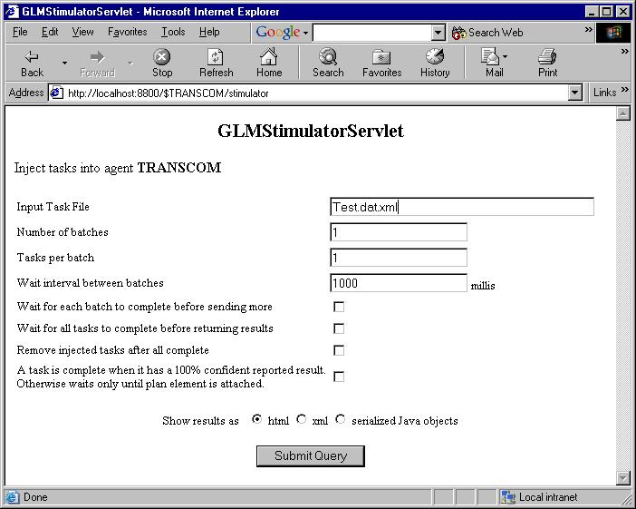

GLM Stimulator Servlet
Usage Guide

GLM Stimulator ServletUsage Guide |
|
|
Jump down to:
IntroductionThe GLM Stimulator Servlet allows the user to inject one or more tasks into an agent.These tasks are created from an xml file that defines the fields of the tasks. Each batch of tasks that is read in is then published to the log plan. There are a number of options, as illustrated in this screen shot of the servlet :  The fields are, in order :
If you specify waiting between batches, you get back timing information like this : <response> <results totalTime=""> <task id="TRANSCOM/1021062530512" time="2:00:092"/> <task id="TRANSCOM/1021062530514" time="2:00:092"/> </results> <histogram minBucket="15" maxBucket="15"> <bucket elapsedTime="100000..200000" count="2"/> </histogram> </response> This is the html that is the GLMStimulatorServletResponseData produces. In this example, there was one batch with two tasks. The histogram data shows the bucket information, where the time is broken down into 100 second buckets. The two tasks fell into the same bucket, going from 100 to 200 seconds. If you are writing a client, you can get this object back directly from the URL, or parse xml results. If you want to send tasks that vary in requested end time, you should define multiple tasks in the tasks xml file. If requested, we could also add the option to advance the end time of every task with each batch by a constant. Sample URLA sample URL access of the servlet ishttp://localhost:8800/$TRANSCOM/stimulator?inputFileName=Test.dat.xml&numberOfBatches=2&interval=1000&wait=true&format=html File locationsThe test input files are in glm/data/testinput. Here you'll also find the dtd for the test files and a sample ammo_prototype file that describes an ammo prototype and a ldm.xml suitable for use with the UTILLdmXMLPlugin. See note on necessary plugins below.Config PathFor the servlet to find the test file, dtd file, and any prototype files, they must be on the config path. So you may have to add the glm/data/testinput directory to the config path, e.g. :-Dorg.cougaar.config.path=$COUGAAR_INSTALL_PATH/glm/data/testinput; (Note the trailing semi-colon, which is required). The source files are in the glm module at org.cougaar.glm.servlet. Necessary PluginsThe necessary component is (as from an ini file) :plugin = org.cougaar.core.servlet.BlackboardServletComponent(org.cougaar.glm.servlet.GLMStimulatorServlet, /stimulator) If the test file refers to a prototype that is not already loaded, you'll need to load it explicitly. In the sample test task, I loaded an ammo prototype using the UTILLdmXMLPlugin : plugin =org.cougaar.lib.plugin.UTILLdmXMLPlugin(ldmFile={String}Ammo_AssetList.ldm.xml) Here it refers to an ldm xml file that defines the prototype. Input file formatThe sample Supply task illustrates the file format:<tasklist> <task id="test_task"> <verb>Supply</verb> <directobject> <asset id="ammo-1000">Ammo_Prototype</asset> </directobject> <for>3-69-ARBN</for> <oftype>Ammunition</oftype> <to> <geoloc>RUINS</geoloc> <!-- TAA location from EritreaNetwork --> <latitude>39.9167</latitude> <longitude>37.1167</longitude> <name>RUINS</name> </to> <maintaining> <type>Inventory</type> <nomen>120MM APFSDS-T M829A1</nomen> <typeID>DODIC/C380</typeID> </maintaining> <refill/> <enddate> <bestdate> <year>2005</year> <month>10</month> <day>15</day> <hour>12</hour> <minute>00</minute> <second>00</second> </bestdate> </enddate> <quantity>1</quantity> <!-- quantity preference --> </task> </tasklist> Inside of the tasklist tag you can define multiple tasks. Each of which takes a Verb, a Direct Object, Prepositions and Preferences. VerbsThe verb is just the contents of the Verb tag, e.g.<verb>Supply</verb> The verb is Supply. Direct ObjectsThe direct object can be a vanilla asset, as in the example, or an asset group or an aggregate asset. The asset tag requires a unique identifier to go in the item identification PG of the asset, and the prototype the asset is an instance of. E.g.<asset id="ammo-1000">Ammo_Prototype</asset> Here the item id is "ammo-1000" and the prototype the asset will be made from is the prototype named "Ammo_Prototype." An asset group would look like : <directobject> <assetgroup id="ag-001"> <aggregateasset prototype="PASSENGER" quantity="20000"/> <aggregateasset prototype="TANK" quantity="300"/> </assetgroup> </directobject> This defines an asset group containing two aggregate assets. These illustrate the format of an aggregate asset definition : the prototype followed by the aggregate quantity. PrepositionsThe prepositions currently supported are :fromThe from preposition wraps a geoloc location (the indirect object of the preposition will be a geoloc object), e.g.<from> <geoloc>HKUZ</geoloc> <latitude>31.850000</latitude> <longitude>-81.60000</longitude> <name>Ft. Stewart</name> </from> toJust like the from prep, except the tag is named "to."withusingThese preps wrap assets, e.g.<with> <asset id="tank-001">TANK</asset> </with> maintainingWraps a MaintainedItem object, used with the inventory manager e.g.<maintaining> <type>Inventory</type> <nomen>120MM APFSDS-T M829A1</nomen> <typeID>DODIC/C380</typeID> </maintaining> forSpecifies which unit the task is for, wrapping a String, e.g.<for>3-69-ARBN</for> oftypeSpecifes the type of asset being handled, wrapping a String, e.g.<oftype>Ammunition</oftype> prepoA marker preposition, e.g.<prepo/> refillA marker preposition, e.g.<refill/> ItineraryOfLets you attach schedules to a task, hanging off the ItineraryOf prep, e.g.<ItineraryOf> <ItineraryElement> <StartLocation> <geoloc>HKUZ</geoloc> <latitude>31.850000</latitude> <longitude>-81.60000</longitude> <name>Ft. Stewart</name> </StartLocation> <EndLocation> <geoloc>XXXX</geoloc> <latitude>14.88</latitude> <longitude>39.32</longitude> <name>Eriteria</name> </EndLocation> <StartDate> <year>2005</year> <month>08</month> <day>1</day> <hour>12</hour> <minute>00</minute> <second>00</second> </StartDate> <EndDate> <year>2005</year> <month>09</month> <day>1</day> <hour>12</hour> <minute>00</minute> <second>00</second> </EndDate> <ItineraryElement> <ItineraryOf> In English, this defines a LocationSchedule with one Location Schedule Element, going from Ft. Stewart to Eriteria, from August 1st, 2005 to September 1st, 2005. RespondToUsed to indicate an organization to respond to, e.g.<RespondTo>AEF</RespondTo> PreferencesstartdateDefines the start time preference. Wraps the ready at tag which defines the time after which a task can be performed.This becomes a NearOrAbove Scoring Function, e.g. <startdate> <readyatdate> <year>2000</year> <month>06</month> <day>01</day> <hour>12</hour> <minute>00</minute> <second>00</second> </readyatdate> </startdate> enddateDefines the end time preference. Can be either a VScoringFunction, defined by three points, or a NearOrBelow scoring function, if only one point is given.For example, a three point scoring function, with earliest, best, and latest arrival specified would be : <enddate> <earlydate> <year>2000</year> <month>06</month> <day>03</day> <hour>06</hour> <minute>00</minute> <second>00</second> </earlydate> <bestdate> <year>2000</year> <month>06</month> <day>03</day> <hour>12</hour> <minute>00</minute> <second>00</second> </bestdate> <latedate> <year>2000</year> <month>06</month> <day>03</day> <hour>18</hour> <minute>00</minute> <second>00</second> </latedate> </enddate> And a simpler one point scoring function might look like (i.e. just having a best date) : <enddate> <bestdate> <year>2005</year> <month>10</month> <day>15</day> <hour>12</hour> <minute>00</minute> <second>00</second> </bestdate> </enddate> costDefines the cost preference, becoming a NearOrBelow scoring function:<cost>1000000</cost> Indicates a requirement for a cost less than $1 million dollars. quantityIndicates a preferred quantity of the direct object, e.g.<quantity>1</quantity> Known bugs and other issuesNone known. |